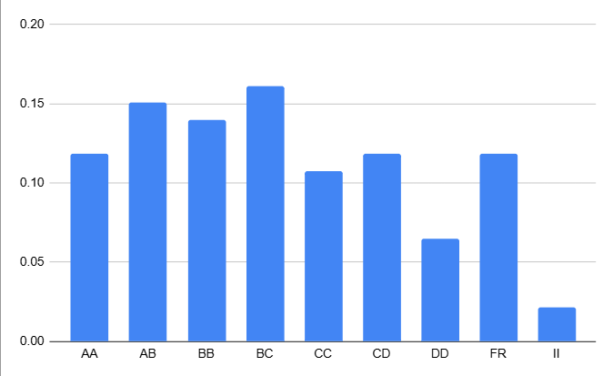

EE302-Controls
Grading

Grading :Grading :previous offering prof. Harish Pillai(general trend is the same)
Dual Degree(S2)
Credit Structure
4 Quizzes — 10% each
1 Midsem — 20%
1 Endsem — 30%
1 Design quiz — 10%
B.Tech(S1)
Resources
Handwritten Notes(Harish Pillai)
Course Page(DD)
Course Drive
Reference Book
↑